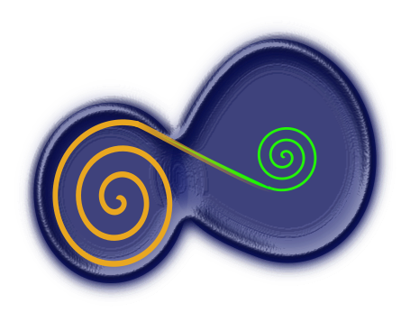

Truth as a Public Good
Decentralized Co-ops: Waste as a Public Good
Waste as a Public Good is the first build of the Truth as a Public Good Working Group - a project that layers the principles of cooperativism, decentralized networks, and waste eradication. The project objective outlined in the vision document below is to prototype a technology that will streamline a cooperative, circular economy business model where members of a Community can have decentralized access to the Collective’s resources.
